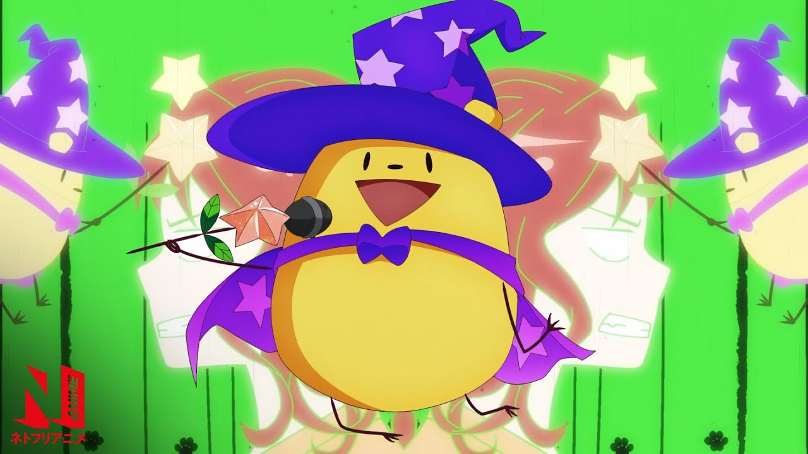
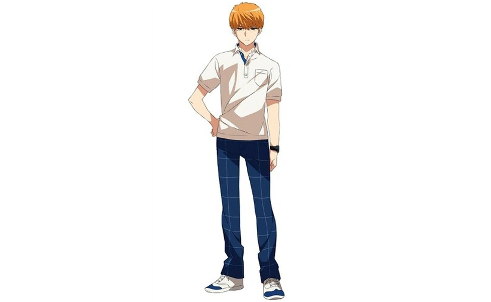
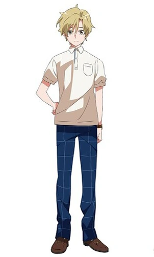

Romantic killer
Romantic Killer é uma divertida comédia romântica que subverte os clichês dos simuladores de namoro (otome games). A história segue Anzu Hoshino, uma adolescente que prefere passar o tempo jogando videogame, comendo chocolate e mimando seu gato. A vida tranquila vira de cabeça para baixo quando Riri, uma criatura mágica, a obriga a viver em uma "versão de testes" de um jogo de romance, confiscando suas três maiores paixões para forçá-la a se envolver com garotos.
O grande diferencial do anime é a protagonista: Anzu não é a típica donzela em perigo que suspira pelos rapazes, mas sim uma garota determinada que resiste a qualquer custo às armadilhas românticas criadas pela magia de Riri. Apesar da premissa cômica e leve, a série aborda temas surpreendentemente profundos e tensos em sua reta final, como o trauma e a perseguição vividos por um dos personagens masculinos
A Trama e os Personagens
Com 12 episódios, a adaptação foi produzida pelo estúdio domerica e está disponível na Netflix.
.jpg)
Anzu Hoshino: A protagonista.
É uma "anti-heroína" dos shoujos: desajeitada, teimosa, desinteressada em namoros e obcecada por seus hábitos geeks. Ela faz de tudo para resistir aos planos de Riri, o que gera interações hilárias.
.jpg)
Riri: A criatura mágica (uma espécie de fada com formato de "batatinha") responsável por toda a confusão.
Riri é encarregado de aumentar a taxa de natalidade no Japão e manipula o destino de Anzu, gerando os cenários clássicos de romance. Conforme a história avança, o personagem ganha muita profundidade emocional.

Tsukasa Kazuki: O garoto mais popular e bonito da escola. Ele é forçado a cruzar o caminho de Anzu, mas, surpreendentemente, não liga para o assédio das garotas e prefere a companhia dela. Tsukasa esconde um trauma sombrio e pesado do passado envolvendo perseguição (stalking), o que o faz ter pavor da aproximação de mulheres.
.jpg)
Junta Hayami: O amigo de infância fofo e dedicado de Anzu. Ele é apaixonado por ela desde pequenos, mas é tímido demais para confessar seus sentimentos. Ele eventualmente se junta ao triângulo (ou polígono) amoroso da trama.

Hijiri Koganei: Um garoto extremamente rico, mimado e arrogante. Ele inicialmente despreza Anzu, mas, graças às manipulações de Riri, acaba desenvolvendo sentimentos genuínos por ela após perceber que ela o trata como uma pessoa comum.
Romantic Killer é altamente recomendado para quem busca uma comédia romântica inovadora, ágil e extremamente divertida. A produção foge do óbvio ao transformar clichês saturados em piadas inteligentes.
Aqui estão os principais motivos para assistir ao anime:
- Por que assistir
- Protagonista incrível: Anzu é decidida, carismática e quebra o padrão de personagens passivas de romances.
- Humor visual afiado: As caretas e reações exageradas de Anzu rendem ótimas risadas.
- Subversão de clichês: O anime brinca abertamente com tropos como "trombar com um garoto bonito carregando pão".
- Evolução da trama: A história começa como pura comédia e evolui para arcos com profundidade emocional.
- Ritmo dinâmico: Os 12 episódios fecham um arco completo sem enrolação.
- Para te ajudar a decidir, posso detalhar mais sobre:
- O perfil dos três pretendentes principais da história
- O estúdio de animação e o estilo visual adotado